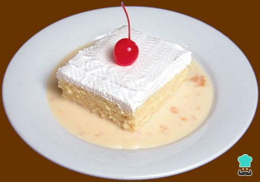

Ingredientes:
- 1 lata de leche condensada
- 1 lata de crema de leche
- 1 taza de leche líquida
- 1 paquete de gelatina sin sabor
- 1 paquete de galletas de leche
Preparacion:
- Para preparar el postre de tres leches con galletas, comienza por disolver la gelatina sin sabor en una taza de agua templada.
- Pon a hervir el agua con la gelatina disuelta y deja enfriar la mezcla. Luego, licua la leche condensada, la crema de leche, la leche líquida y la gelatina disuelta.
- Mientras tanto, en un recipiente preferiblemente de vidrio, arma una base con las galletas María o de leche. Puedes humedecerlas en la misma mezcla de leche que ya tienes preparada. No las empapes en exceso porque se partirán. También puedes hacer el postre de tres leches con galletas Ducales.
- Cuando tengas la base de galletas lista, agrega el contenido de la licuadora. Deberás meter la preparación en el refrigerador hasta que cuaje la mezcla. El proceso del postre de tres leches frío puede tardar un día.
- Cuando tengas la base de galletas lista, agrega el contenido de la licuadora. Deberás meter la preparación en el refrigerador hasta que cuaje la mezcla. El proceso del postre de tres leches frío puede tardar un día.
Comentarios
Correo Electronico :
Nombre de Usuario :
Nombre de Receta :
Fecha de Comentario :
Enviar